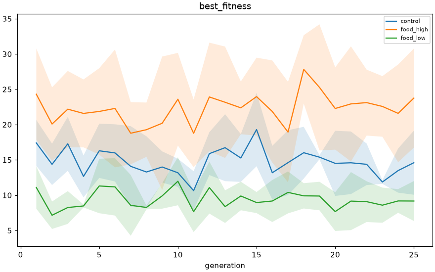
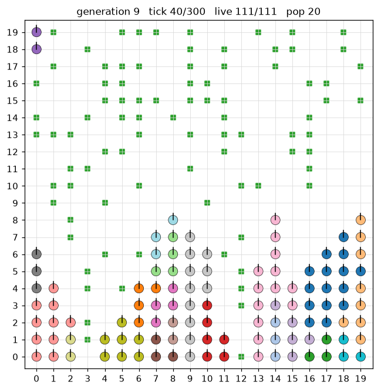

Clage: Neuroevolution & Artificial Life from Scratch
A pure Python implementation of NeuroEvolution of Augmenting Topologies (NEAT) built without neat-python or machine-learning libraries. Paired with an energy-constrained 2D simulation world, reproducible multi-seed experiments, and behavioral diversity metrics.
Results
Real outputs from the repository (5 seeds each, deterministic)
Engine validation (300 generations per trial):
| Problem | Solved (of 5) | Generations to solve (min / median / max) |
|---|---|---|
| OR | 5 | 7 / 13 / 13 |
| AND | 5 | 19 / 27 / 105 |
| XOR | 4 | 147 / 184.5 / 243 |
| sin | 0 | not solved in 300 (mean best fitness 0.91) |


Food-Abundance Experiment
Left: best fitness per generation for three food levels (20 organisms, 25 generations). More food gives fitter populations, more foraging, and more in-world reproduction, and the three conditions separate consistently. This is not a learning curve: each generation reseeds the world, and best fitness is flat within noise over 25 generations. Right: a recorded generation replayed from the repository’s viewer.
1. Why Build NEAT from Scratch?
Modern deep learning treats neural network topologies as static, fixed computation graphs where only connection weights are optimized via backpropagation. In contrast, Kenneth Stanley’s NeuroEvolution of Augmenting Topologies (NEAT) evolves both connection weights and the graph structure simultaneously.
While standard packages like neat-python exist, they obscure the subtle graph mechanics: how to cross over two neural networks of radically different shapes without combinatorial explosion, how to prevent destructive competition among novel structures, and how to verify topological correctness.
I built Clage from first principles to understand exactly what happens underneath evolutionary graph abstractions. Every line of code—from gene encoding to speciation distance equations—is implemented in pure Python, backed by 300 tests that pass in CI.
2. Core Algorithm Architecture
Global Innovation Ledger
To align matching genes between two arbitrarily evolved neural networks during crossover, Clage maintains a global innovation database. When a structural mutation adds a connection between node in and node out, the ledger checks if that exact innovation occurred elsewhere in the current generation. If so, it reuses the historical innovation number; otherwise, it increments the global counter. This makes linear-time topological alignment possible.
Speciation & Compatibility
Structural additions initially decrease fitness because new connections have unoptimized weights. Clage partitions the population into evolutionary niches (species) using Kenneth Stanley’s compatibility distance:
where E is excess genes, D is disjoint genes, and ΔW is average weight difference across matching genes. The normalizer N is set to 1 for small genomes (< 20 connections) to prevent distance collapse. Species maintain persistent representative champions, age counters, and stagnation tracking with explicit shared fitness.
Phenotype Network Construction
Clage decodes genome connection lists into executable feed-forward neural networks in pure Python. A deterministic evaluation order is established using Kahn’s topological sort with min-heap tie-breaking on node IDs. Active graph cycles raise a ValueError at decode time (strictly feed-forward, cyclic graphs rejected at decode time), and node activations compute math.tanh over incoming weighted sums plus bias.
Benchmark Validation
Before deploying the engine in an open-ended simulation, the evolutionary implementation was validated across fixed random seeds against: OR, AND, non-linearly separable XOR (requiring evolved hidden nodes), and continuous sine wave regression. OR and AND solve in every seed and XOR in 4 of 5; sine regression is not solved within 300 generations (see Results).
3. 2D Artificial-Life Environment
Once benchmarked, the NEAT engine was connected to an embodied 2D walled grid world with energy dynamics:
- 9-Number Observation Vector: At every tick, an organism observes its surroundings via a normalized 9-element array:
where
[food_dx, food_dy, food_density, organism_density, normalized_energy, boundary_x, boundary_y, prev_move, prev_eat]food_dxandfood_dyare normalized offsets to the nearest food item in [-1.0, 1.0],food_densityandorganism_densitycount entities within a radial window,normalized_energyrepresents remaining energy fraction,boundary_x/boundary_ymeasure wall proximity (1.0 at walls, 0.0 at center), andprev_move/prev_eatare binary indicators of the organism’s previous action. - 4 Discrete Network Actions: The neural network outputs 4 values; the organism executes the action corresponding to
argmax(outputs):0: MOVE (Forward) 1: TURN_LEFT (90°) 2: TURN_RIGHT (90°) 3: EAT (Facing Cell) - Lifecycle Reproduction (Not a Neural Trigger): Reproduction is not an action emitted by the network. Instead, it is a separate lifecycle event evaluated after action execution and metabolic deduction: if an organism’s energy meets or exceeds the reproduction threshold and an adjacent grid cell is vacant, the organism reproduces asexually, transferring a configured energy fraction to an offspring placed in the adjacent cell.
- Metabolic & World Dynamics: Each tick incurs an unavoidable baseline metabolic cost. Food regenerates dynamically across configurable spatial distributions to prevent trivial static feeding.
4. Behavioral Diversity & Empirical Rigor
In evolutionary simulations, it is easy to mistake accidental spatial clustering for genuine behavioral intelligence. To measure whether populations actually developed diverse survival strategies, I designed a set of quantitative behavioral metrics computed from per-tick traces, including:
Shannon entropy across the 4-action distribution, distinguishing active multi-action policies from degenerate fixed agents.
Conditional entropy H(at | at-1) measuring sequential action structure and temporal predictability beyond raw marginal frequencies.
Fraction of distinct grid cells visited over the total world area, quantifying dispersion without assuming navigation intent.
Mean cosine between effective movement vectors and nearest-food direction vectors, tracking statistical directional coupling.
Measures generational survival depth and phylogenic branch longevity across speciation boundaries.
Tracks the ratio of food calories harvested to movement energy expended over total agent lifespan.
Empirical Finding: Food Density Confound
During experimental sweeps across food abundance conditions, initial analytics appeared to show that certain conditions yielded significantly higher “food navigation intelligence.” However, rigorous ablation revealed that food_alignment_cosine was base-rate confounded by local food replenishment density: in dense food environments, random walks naturally align with food items purely due to geometric proximity. Once diagnosed, food alignment was excluded from cross-condition comparisons and restricted strictly to within-condition baselines with equalized resource distributions.
5. Verification & Test Suite
The engine has 300 unit and integration tests, passing in CI on Python 3.10 and 3.12, covering: